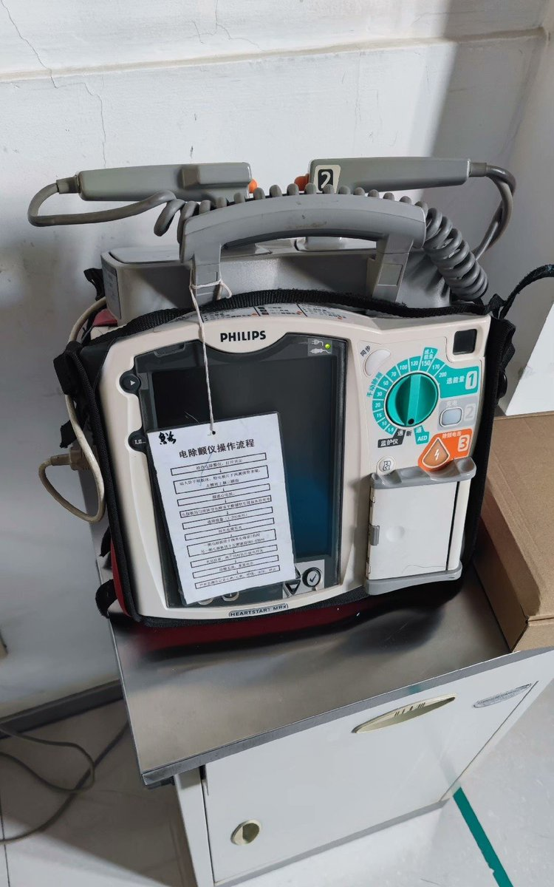

STRIDSFORDON 9040C
@Strf_9040C
家里几岁的弟弟刚刚喝完奶，突然哭喊着要买什么…… “飞利浦监护除颤仪HeartStart MRx M3535A除颤监护仪 院前急救用”
咱也不知道这孩子是从哪儿知道的，也不懂这是干什么滴～
但是看孩子哭闹得厉害，最后还是咬咬牙给他买了
没办法，谁叫他有一个爱他的好哥……（划掉）好姐姐呢🥰

Fe²⁺🍥
@Fe_ions
家里几岁的弟弟刚刚喝完奶，突然哭喊着要买什么…… “【地牢实验室】“郊狼”专业级情趣电击主机3.0 SM调教体罚刑具”
咱也不知道这孩子是从哪儿知道的，也不懂这是干什么滴～
但是看孩子哭闹得厉害，最后还是咬咬牙给他买了
没办法，谁叫他有一个爱他的好哥……（划掉）好姐姐呢🥰